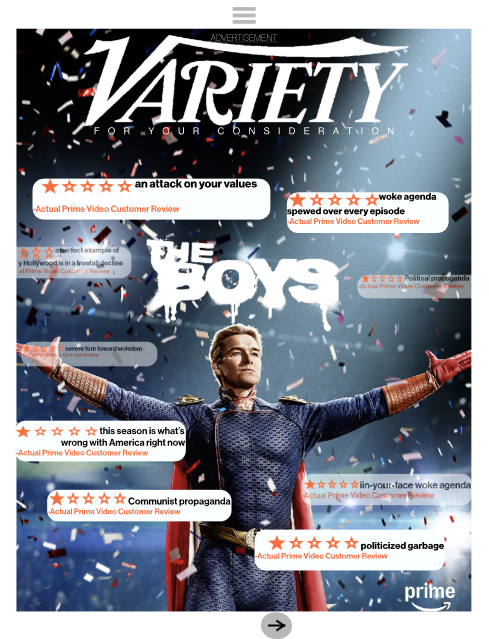
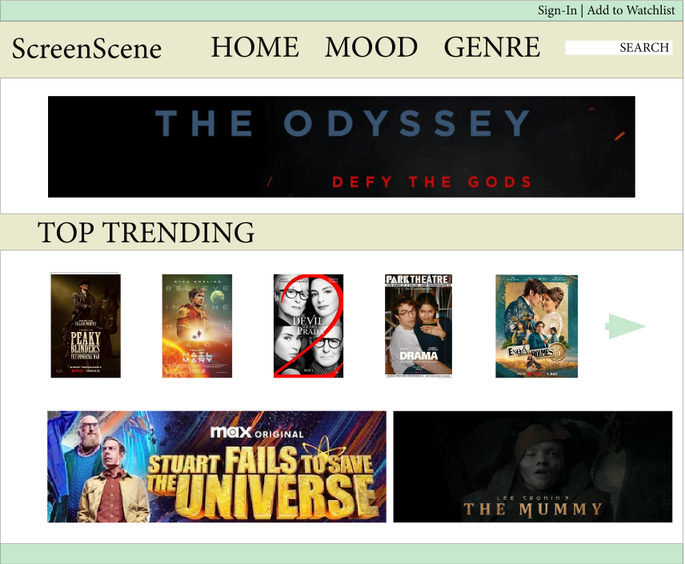
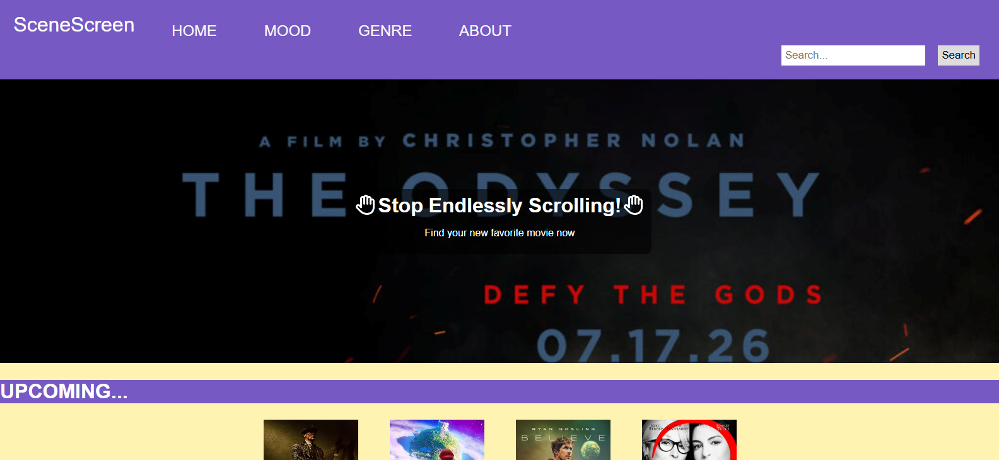
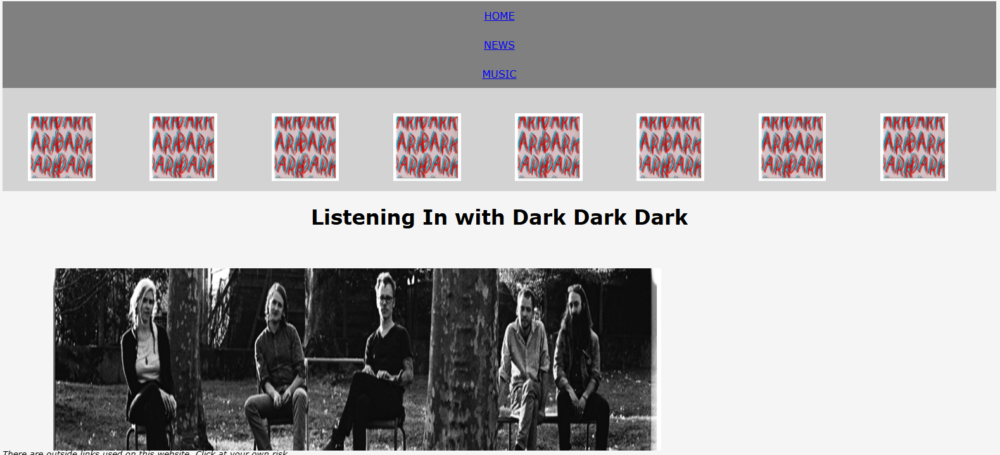
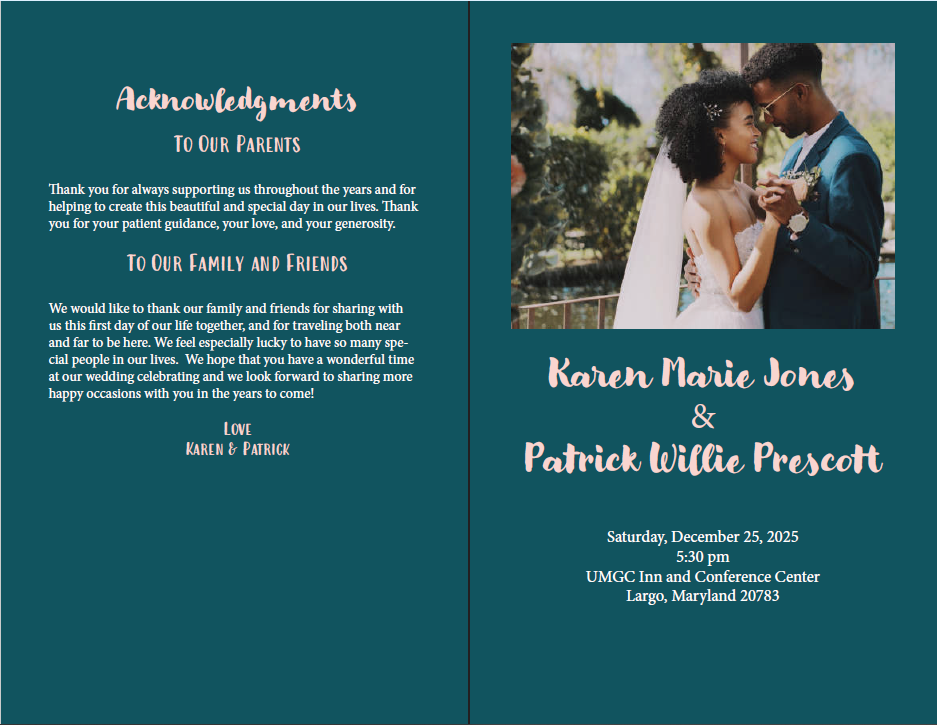
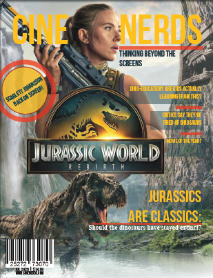
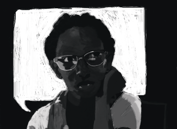
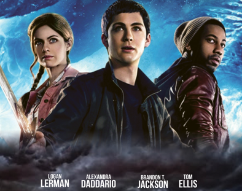
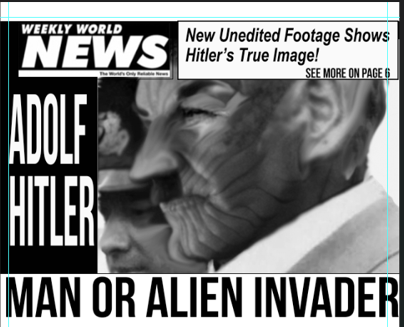

Web & Digital Portfolio
Launch Interactive Magazine
Variety Magazine Recreation
An interactive recreation of Variety Magazine's November 20, 2024 issue.
Tools:Adobe InDesign, Adobe Express
View Case Study
ScreenScene UX Prototype
Designed an interactive movie recommendation prototype using user research, wireframing, and usability testing.
Tools:Adobe InDesign, Adobe XD
View Case Study
SceneScreen Website
A responsive movie recommendation website developed with HTML, CSS, and JavaScript to help users discover films based on genre and mood.
Tools:HTML, CSS, JavaScript
View Case Study
Dark Dark Dark Information Website
An informational website designed to showcase the music and history of the band Dark Dark Dark using semantic HTML and CSS.
Tools:HTML, CSS
View Case Study
Wedding Program
A professionally designed wedding program created in Adobe InDesign with an emphasis on typography, layout, and print design.
Tools:Adobe InDesign
View Case Study
CineNerds Magazine
Designed a three-page magazine from scratch in Adobe InDesign, including the publication title, cover, original article content, typography, layout, and visual elements.
Tools:Adobe InDesign
View Case Study
Book Cover
A custom book cover designed in Adobe Photoshop using photo manipulation, typography, and composition techniques.
Tools:Adobe Photoshop
View Case Study
Movie Poster
A cinematic movie poster designed in Adobe Photoshop using compositing, image editing, and visual storytelling techniques.
Tools:Adobe Photoshop
View Case Study
Hoax Magazine Cover
A fictional magazine cover created in Adobe Photoshop demonstrating editorial layout, typography, and visual hierarchy.
Tools:Adobe Photoshop
View Case Study